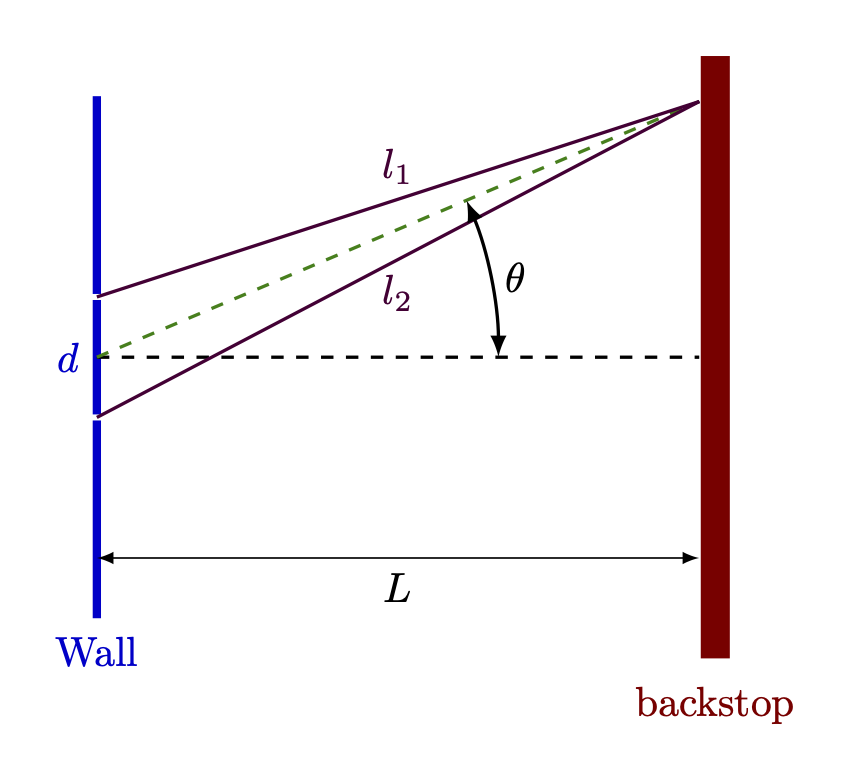
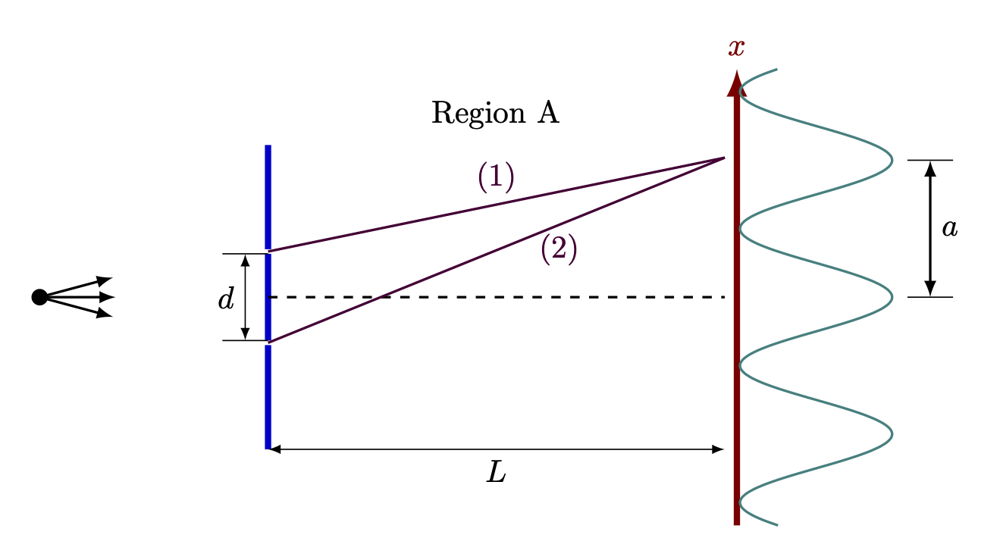
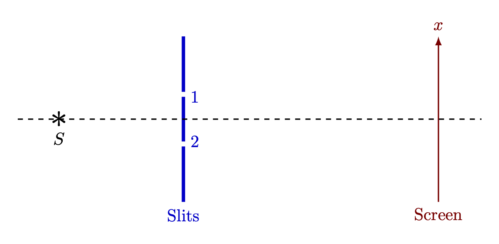
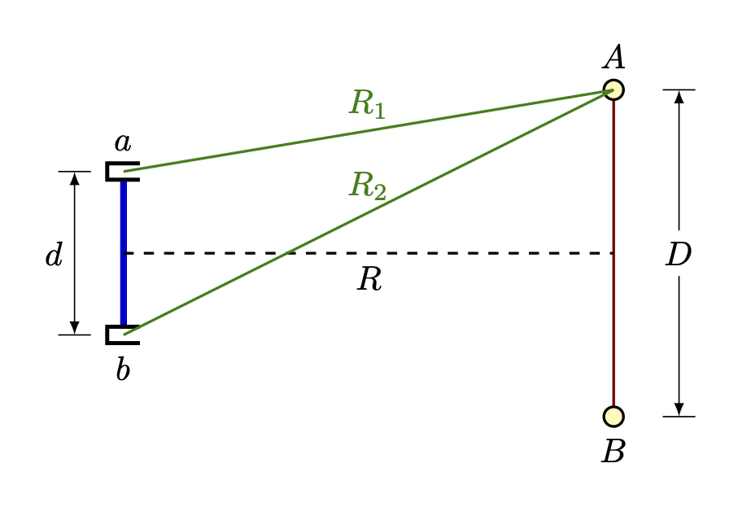

% %
%
\[ \DeclarePairedDelimiters{\set}{\{}{\}} \DeclareMathOperator*{\argmax}{argmax} \]
70. Probability Amplitude
파인만 물리학 강의 3 권 3장 ~ 장에 해당한다.
70.1 III.3 확률 진폭 에 묘사된 가상의 전자 간섭 실험을 생각하자. 그림 14.1 의 간섭 패턴 \(P_{12}\) 로부터 파장 \(\lambda\) 를 평가 할 수 있으며 \(\lambda\) 는 진폭 함수 \(\phi_1\), \(\phi_2\) 와 관계된다. 슬릿 중앙 사이의 거리는 \(d\) 이고 벽(wall) 과 백스탑(Backstop) 사이의 거리는 \(L\) 이다. \(x\) 를 백스탑 중심으로 부터 첫번째 극소값 까지의 거리라고 하고 하자.
(\(a\)) \(L \gg d\) 일 때 \(\lambda\) 는 무엇인가?
(\(b\)) \(P_1\) 과 \(P_2\) 로 주어진 곡선을 생각할 때 \(P_{12}\) 의 중심과 첫번째 극소값에서의 값은 무엇인가?

(해답). 아래 그림과 같이 변수를 잡는다.

(\(a\)) \(l_2-l_1=\lambda/2\) 일 때 첫번째 극소값이다. \(|t|\ll 1\) 일 때 \(\sqrt{1\pm t}\approx 1 \pm t/2\) 임을 이용한다.
\[ \begin{aligned} \lambda &= 2(l_2-l_1) = 2\sqrt{L^2 + \left(x+\dfrac{d}{2 }\right)^2 } - \sqrt{L^2 + \left(x-\dfrac{d}{2}\right) } \\[0.3em] &\approx 2\dfrac{L}{2}\left[\dfrac{2 dx}{L^2}\right] = \dfrac{2dx}{L} \end{aligned} \]
(\(b\)) \(P_1 = |\phi_1|^2\) \(|P_2 = |\phi_2|^2\) 일 때 \(P_{12} = |\phi_1+\phi_2|^2\) 이다. 중심, 즉 \(x=0\) 에서는 \(\phi_1\) 과 \(\phi_2\) 의 위상이 같으므로
\[ P_{12}(x=0)= |e^{i\delta}(|\phi_1(x=0)| + |\phi_2(x=0)|)|^2 = ||\phi_1(x=0)|+|\phi_2(x=0)||^2. \]
이고 첫번쩨 최소값인 \(x\) 값을 \(x_1\) 이라고 하면 위상이 \(-1\) 만큼 차이나므로
\[ P_{12}(x=x_1) = ||\phi_1(x=x_1)|- |\phi_2(x=x_1)||^2 \]
이다.
70.2 70.1 의 이중슬릿 문제를 다시 생각하고 전자총과 벽까지의 거리와 벽부터 백스탐까지의 거리가 슬릿 사이의 거리 \(d\) 보다 아주 크다고 하자. 또한 슬릿의 폭은 슬릿 사이의 거리보다 아주 작다고 하자. 다음 문제에 대해 가능한 한 정량적으로 답하라.
(\(a\)) 총이 위로 \(D\) 만큼 움직인다면 \(P_12\) 의 간섭 패턴에는 어떤 일이 발생할까?
(\(b\)) 슬릿 사이의 거리가 두배가 되면 패턴은 어떻게 되나?
(\(c\)) 하나의 슬릿의 두께가 다른 슬릿의 두배가 된다면 어떠헥 될까?
(해답). (\(a\)) 총이 위로 \(D\) 만큼 움직이면 \(P_1\) 과 \(P_2\) 의 중심이 모두 아래쪽으로 움직일 것이고 간섭 패턴 역시 아래쪽으로 움직일 것이다.
(\(b\)) 70.1 (\(a\)) 의 결과에 따라 첫번째 최소값을 갖는 위치가 \(x=\lambda L/(2d)\) 이므로 위치가 반이 된다.
(\(c\)) \(P_{12} = |2\phi_1 (x) + \phi_2(x)|^2\)
70.3 수직으로 편광된 단색광이 편광 투과축 각도(Polarization Transmitting Angle)가 \(\theta\) 만큼 기울어져 있는 폴라로이드에 입사되고 있다. 고전적으로 입사 강도에 대한 투과 강도의 비율은 얼마인가? 단일 입사 광자에 대해 폴라로이드는 어떤 일을 하는가?
(해답). 고전적로 \(I_\text{transmitted}= I_\text{incident} \cdot \cos ^2 \theta\) 이다. 단일 광자에 대해서는 광자가 폴라로이드와 만날 때 \(\cos^2\theta\) 의 확률로 투과하며 \(1-\cos^2\theta\) 의 확률로 흡수된다.
70.4 20,000 eV 전자빔이 다결정 금박을 통과하여 사진 건판(photographic plate) 를 때린다. 이 건판은 전자 축을 중심으로 동심원 형상으로 어두워진다. 왜인가? 금박과 건판의 거리가 10 cm 일 때 이 동심원의 지름을 구하라.
(해답). 20,000 eV 전자의 파장 \(\lambda = 8.67\times 10^{-12}\,\text{m}\) 이며 금은 FCC 구조로 격자상수 \(a=4.07\times 10^{10}\,\text{m}\) 이다. FCC 구조이므로 첫번째 브래그 픽은 (111) 방향으로 나타나며 이 때의 면간 간격은 \(d_{(111)}=2.35 \times 10^{-10}\,\text{m}\) 이다. \(\lambda = 2d_{(111)}\sin\theta_{(111)}\) 로부터 \(\theta_{(111)} = 0.01845 \,\text{rad}\) 이고 금박과 건판의 거리가 \(10 \, \text{cm}\) 이므로 동심원의 지름은 \(2\times 10\times \tan(\theta_{111})=0.370 \,\text{cm}\) 이다.
70.5 70.1 의 표준적인 이중 슬릿 실험을 생각하자. 슬릿에서의 전자의 진폭을 알면 스크린에서의 패턴을 예측할 수 있음을 보일 수 있다.
(\(a\)) \(a_1,\,a_2\) 를 각각 슬릿 1 과 2 에서의 진폭이라고 하자(복소수이다). 그렇다면 화면에서의 상대적인 강도 분포 \(I(x)\) 는 무엇인가? 여기서 \(x\) 는 화면 중심으로부터의 거리이다. 그리고 \(x\) 와 두 슬릿 사이의 거리 \(d\) 가 슬릭과 화면 사이의 거리 \(L\) 보다 작다고 가정하고 근사하라.
(\(b\)) 만약 패턴이 슬릿 \(1\) 과 \(2\) 에서의 진폭에만 의존한다면 어떻게 전자는 슬릿 뒤에서 패턴을 결정하기 위해 어떤 파장을 쓸 지 알게 되는가?
(해답). (\(a\)) \(P(x) = |\langle x|1\rangle \langle 1|s\rangle + \langle x|2\rangle \langle 2|x\rangle|^2= |a_1\langle x|1\rangle + a_2\langle x|2\rangle|^2\), where \(a_1=\langle 1|s\rangle\), \(a_2=\langle 2|s\rangle\)
(\(b\))
70.6 아래 그림 14.3 과 같은 회절 실험을 생각하자. 입자발생기는 질량 \(m\), 속도 \(v\), 운동량 \(p_0\) 인 입자를 방출한다.

(\(a\)) \(L \gg d,\, L \gg a\) 일 때 중앙의 극대점과 인접한 극대점 사이의 거리 \(a\) 를 구하라.
(\(b\)) 어떤 영향으로 인해 경로 (1) 의 위상이 \(\delta \phi_1\) 만큼 변하고 (2) 의 위상은 \(\delta \phi_2\) 만큼 변했을 때 중앙의 극대점은 아래와 같이 주어지는 거리 \(S\) 만큼 이동한다는 것을 보여라.
\[ S = + (\delta \phi_1-\delta \phi_2) \dfrac{L}{d}\dfrac{\hbar}{p_0}. \]
따라서 간섭을 일으키는 모든 경로에서 \((\delta \phi_1-\delta \phi_2)\) 가 동일하다면 간섭 패턴이 \(S\) 만큼 이동하며, 이로부터 우리는 입자의 경로가 위쪽으로 \(S\) 만큼 회절했다고 말할 수 있다.
(\(c\)) Region A 에서 입자는 수직 방향의 위치에만 의존하는 작은 포텐셜 을 가진다고 하자. 그렇다면 중심선에 대해 높이 \(x\) 에서의 입자의 운동량 \(p(x)\) 는 \(p(0)\) 와 약간 달라진다. 이 때 다음을 보여라.
\[ p(x) = p(0) + \dfrac{m}{p(0)}(V(0)-V(x)). \]
\(V(x)\) 가 천천히 변하는 경우 \(F=-\partial V/\partial x\) 에 대해
\[ p(x) = p(0) + \dfrac{Fx}{v} \]
가 됨을 보여라.
(\(d\)) (\(c\)) 와 같은 상황에서 경로 (1) 과 경로 (2) 운동량은 다르며, 파장 역시 다르다.
(\(1\)) 위와 아래 경로의 위상차이는 다음과 같음을 보여라. \[ (\delta \phi_1 -\delta \phi_2) = \dfrac{d}{2v}\dfrac{F}{\hbar}L \] 두 경로에 대해 평균적인 수직방향 차이는 \(d/2\) 이다.
(\(2\)) 간섭 패턴이 위로 \(\frac{1}{2}(F/m)t^2\) 만큼 이동함을 보여라. 여기서 \(t=L/v\) 이다.
(해답). (\(a\)) 그림 14.2 과 같이 정하면 \(l_2-l_1=\lambda\) 일 때 두번째 극값이 정해진다. 이로부터 \(\lambda = (l_2-l_1) \approx da/L\) 이므로 \(a=L\lambda/d = Lh/p_0d\).
(\(b\)) \[ \begin{aligned} I(x) &= \left|e^{i\delta\phi_1}e^{ikl_1} + e^{i\delta\phi_2}e^{ikl_2}\right|^2 = \left|1+e^{i(\delta \phi_1- \delta\phi_2)} e^{ik(l_1-l_2)}\right|^2 \\[0.3em] &= 4\cos^2 \left(\dfrac{(\delta \phi_1-\delta \phi_2) + k(l_1-l_2)}{2}\right) \end{aligned} \]
이며 중앙점의 이동은
\[ l_2 - l_1 = \dfrac{\delta \phi_1- \delta\phi_2}{k} = \dfrac{\hbar(\delta \phi_1- \delta\phi_2)}{p_0} \]
에 의해 주어진다. 또한 \(l_2-l_1 = dS/L\) 이므로(70.1 (\(a\)) 의 풀이과정을 보라) 다음이 성립한다.
\[ S = (\delta \phi_1- \delta\phi_2) \dfrac{L}{d}\dfrac{\hbar}{p_0}. \]
(\(c\)) 에너지 보존 법칙에 의해
\[ \dfrac{p(x)^2}{2m} + V(x) = \dfrac{p(0)^2}{2m} + V(0) \]
이며 이로부터 \(p_0=mv\) 를 이용하면
\[ \begin{aligned} p(x) &= \sqrt{p(0)^2 + 2m(V(0)-V(x))} \approx p(0) + \dfrac{m}{p(0)}(V(0)-V(x)) \\[0.3em] &\approx p(0) - \dfrac{m}{p(0)} \dfrac{\partial V}{\partial x} x = p(0) + \dfrac{Fx}{v}. \end{aligned} \]
이다.
(\(d-1\)) \(\delta \phi_1 = (\delta p)L/\hbar=(FL/\hbar v)\delta x_1\), \(\delta \phi_2 = (FL/\hbar v) \delta x_2\) 이므로
\[ \delta\phi_1 -\delta \phi-2 = \dfrac{FL}{\hbar v}(\delta x_1 - \delta x_2)\approx \dfrac{FLd}{2\hbar v}. \]
(\(d-2\)) (\(b\)) 의 결과로부터
\[ S=(\delta \phi_1 -\delta \phi_2)\dfrac{L\hbar}{p_0 d} = \dfrac{F}{2m} \left(\dfrac{L}{v}\right)^2 = \dfrac{Ft^2}{2m} \]
70.7 아래 그림 14.4 과 같이 전자발생기 \(S\) , 슬릿 1, 2 그리고 스크린이 배치되어 있다. 전자는 스핀 \(1/2\) 이며 전자가 슬릿에 도달할 때 스핀이 뒤집히지 않을 확률 진폭 \(\alpha\) 와 뒤집어질 확률진폭 \(\beta\) 를 가진다. 여기에 전자가 어떤 슬릿을 통과하는지 구별할 수 없다고 하자.

(\(a\)) 모든 전자가 업스핀으로 방출될 때 스크린의 위치 \(x\) 에서의 확룰분포를 \(\alpha\), \(\beta\), 그리고 \(\langle 1|S\rangle\), \(\langle x|1 \rangle\) 과 같은 확률 진폭을 이용하여 하라.
(\(b\)) 전자가 모두 다운스핀으로 방출되며 다른 조건은 같을 때의 분포는 위와 어떻게 다른가?
(\(c\)) 전자가 임의의 스핀으로 방출되며 다른 조건은 같을 때 (\(a\)) 와의 차이는 어떤가?
(해답). (\(a\)) \(1\) 번 슬릿을 통과하기 직전의 스핀 상태를 \(|1_\uparrow\rangle\), \(1_\downarrow\rangle\) 과 같이 쓰고 \(1\) 번 슬릿을 통과한 직후의 스핀상태를 \(|1'_\uparrow\rangle\), \(|1'_\downarrow\rangle\) 과 같이 쓰자. \(2\) 번 슬릿에 대해서도 똑같이 쓸 수 있다. 그렇다면
\[ \begin{aligned} \alpha &= \langle 1'_\uparrow|1_\uparrow\rangle = \langle 1'_\downarrow|1_\downarrow\rangle = \langle 2'_\uparrow|2_\uparrow\rangle = \langle 2'_\downarrow| 2_\downarrow\rangle, \\[0.3em] \beta &= \langle 1'_\uparrow|1_\downarrow\rangle = \langle 1'_\downarrow|1_\uparrow\rangle = \langle 2'_\uparrow|2_\downarrow\rangle = \langle 2'_\downarrow| 2_\uparrow\rangle \end{aligned} \]
이다. 또한
\[ \begin{gather} \langle x_\uparrow|1'_\uparrow \rangle = \langle x_\downarrow|1'_\downarrow\rangle,\quad \langle 1_\uparrow| S_\uparrow \rangle = \langle 1_\downarrow|S_\downarrow\rangle,\quad \langle x_\uparrow|2'_\uparrow \rangle = \langle x_\downarrow|2'_\downarrow\rangle,\quad \langle 2_\uparrow| S_\uparrow \rangle = \langle 2_\downarrow|S_\downarrow\rangle, \\[0.3em] 0=\langle x_\uparrow|1'_\downarrow\rangle = \langle x_\downarrow|1'_\uparrow\rangle = \langle 1_\downarrow|S_\uparrow\rangle = \langle 1_\uparrow | S_\downarrow\rangle \end{gather} \]
임을 안다. 이로부터
\[ \begin{gather} \langle x|1\rangle = \langle x_\uparrow|1'_\uparrow \rangle = \langle x_\downarrow|1'_\downarrow\rangle, \quad \langle 1|S\rangle = \langle 1_\uparrow| S_\uparrow \rangle = \langle 1_\downarrow|S_\downarrow\rangle \\[0.3em] \langle x|2\rangle = \langle x_\uparrow|2'_\uparrow \rangle = \langle x_\downarrow|2'_\downarrow\rangle,\quad \langle 2|S\rangle =\langle 2_\uparrow| S_\uparrow \rangle = \langle 2_\downarrow|S_\downarrow\rangle, \\[0.3em] \end{gather} \]
라고 하자. \(x\) 에 업스핀으로 도착할 확률진폭 \(\phi_\uparrow(x)\) 와 다운스핀으로 도착할 확률진폭 \(\phi_\downarrow(x)\) 는 다음과 같다. \[ \begin{aligned} \phi_\uparrow (x) &= \langle x_\uparrow|1'_\uparrow \rangle \langle 1'_\uparrow|1_\uparrow\rangle\langle 1_\uparrow|S_\uparrow\rangle + \langle x_\uparrow|2'_\uparrow \rangle \langle 2'_\uparrow|2_\uparrow\rangle\langle 2_\uparrow|S_\uparrow\rangle \\[0.3em] &= \langle x|1\rangle \alpha \langle 1|S\rangle + \langle x|2\rangle \alpha \langle 2|S\rangle, \\[0.3em] \phi_\downarrow(x) &=\langle x_\downarrow|1'_\downarrow \rangle \langle 1'_\downarrow|1_\uparrow\rangle\langle 1_\uparrow|S_\uparrow\rangle + \langle x_\downarrow|2'_\downarrow \rangle \langle 2'_\downarrow|2_\uparrow\rangle\langle 2_\uparrow|S_\uparrow\rangle \\[0.3em] &= \langle x|1\rangle \beta \langle 1|S\rangle + \langle x|2\rangle \beta \langle 2|S\rangle \end{aligned} \]
이므로
\[ P_{S\uparrow}(x) = |\phi_\uparrow(x)|^2 + |\phi_\downarrow(x)|^2 = (|\alpha|^2 + |\beta|^2)|\langle x|1\rangle \langle 1|S\rangle + \langle x|2\rangle \langle 2|S\rangle|^2 \]
(\(b\)) 같은 방법으로 \(x\) 에 업스핀으로 도착할 확률진폭 \(\psi_\uparrow(x)\) 와 다운스핀으로 도착할 확률진폭 \(\psi_\downarrow(x)\) 는 다음과 같다.
\[ \begin{aligned} \psi_\uparrow (x) &= \langle x|1\rangle \beta \langle 1|S\rangle + \langle x|2\rangle \beta \langle 2|S\rangle \\[0.3em] \psi_\downarrow(x) &=\langle x|1\rangle \alpha \langle 1|S\rangle + \langle x|2\rangle \alpha \langle 2|S\rangle, \end{aligned} \]
그렇다면 확률분포는
\[ P_{S_\downarrow}(x) = |\psi_\uparrow(x)|^2+|\psi_\downarrow(x)|^2 = (|\alpha|^2 + |\beta|^2)|\langle x|1\rangle \langle 1|S\rangle + \langle x|2\rangle \langle 2|S\rangle|^2 \]
이다. 업스핀으로 도착하는 경우와 다운스핀으로 도착하는 확률은 (\(a\)) 와 반대지만 \(x\) 에 도달할 확률은 동일하다.
(\(c\)) \(S\) 가 업스핀과 다운스핀이 \(1/2\) 씩 섞여 있다면 \[ |\chi_\uparrow(x)|^2 = |\chi_\downarrow(x)|^2=\dfrac{1}{2}(|\alpha|^2 + |\beta|^2)|\langle x|1\rangle \langle 1|S\rangle + \langle x|2\rangle \langle 2|S\rangle|^2 \]
이며 당연히 \(P_S(x)\) 는 (\(a\)), (\(b\)) 의 결과와 같다.
70.8 놀랍게도 한쪽의 간섭 확률이 매우 낮아도 큰 간섭효과가 나타 날 수 있다. 두개의 슬릿에 대한 회절실험에서 한 슬릿을 통과할 확률이 다른 슬릿의 1/100 보다 낮다고 하자. 이 때 간섭 패턴의 최대값이 최소값보다 50% 정도 크게 됨을 보여라.
(해답). \[ P = \left|a \dfrac{e^{ikl_1}}{l_1} + \dfrac{a}{10}\dfrac{e^{ikl_2}}{l_2}\right|^2 \]
이며 \(L=l_1 \approx l_2\) 일 때
\[ P_\text{max}\approx \left| \dfrac{a}{L}+ \dfrac{a}{10L}\right|^2= \dfrac{121 |a|^2}{L^2},\, P_\text{min} \approx \left| \dfrac{a}{L}- \dfrac{a}{10L}\right|^2 = \dfrac{81|a|^2}{L^2} \]
이므로
\[ \dfrac{P_\text{max}}{P_\text{min}} \approx \dfrac{121}{81} = 1.494 \]
70.9 가장 가까운 별의 지름은 (당시에) 가장 좋은 망원경으로 관측하기에도 너무 작있다. 별의 직경은 광학 간섭계를 통해 마이켈슨에 의해 처음 측정되었다. 이 방법은 가장 가까운 별에 겨우 적용되었다. Nature 178, 1046 (1956) 에서 Brown 과 Twiss 는 별의 직경을 측정하는 “intensity correlation” 이라고 불리는 방법을 제안하고 시리우스에 적용했다. 그들은 두개의 포물선 반사체 (parabolic reflectors) 거울의 각각의 초점에 photomultiplier 를 설치했고 이 출력을 동축 케이블을 통해 두 전류의 곱을 측정하는 회로에 연결했다(이 값이 소위 correlator 이다). 두 거울 사이의 거리에 따른 이 값의 변화를 이용하여 끼인각을 결정 할 수 있었다.
당시에는 이 방법이 동작하지 않을거라는 물리학자들이 다수 있었다. 그들은 광자 형태의 빛이 둘중 하나의 거울에만 도착할 것이므로 두 전류 사이에 correlation 이 없을 거라고 주장했다. 우리는 아래와 같은 사고실험을 통해 이 논리가 틀렸다는 것을 보일 수 있다. 작은 두 광원 \(A\), \(B\) 가 photomultiplier \(a\), \(b\) 로 부터 멀리 떨어져 그림 14.5 와 같이 위치한다고 하자. 계수기가 \(a,\,b\) 각각에 들어오는 초당 광자수 \(p_1,\,p_2\) 를 측정한다. \(a\) 와 \(b\) 에 설치된 계수기는 연결되어 동시에 들어오는 초당 광자수 \(p_{12}\) 를 측정한다. (물론 작은 시간차 \(\tau\) 는 존재한다.)

\(\langle a|A\rangle\) 을 \(A\) 에서 발생한 광자가 \(a\) 에 어떤 시간 분해능 내에서 측정될 확률진폭이라고 하자. 그렇다면 \(\langle a|A\rangle = ce^{i\alpha_1}\) 이라고 하자. 여기서 \(c\) 는 상수이며 \(\alpha_1 = kR_1\) 이다. 이로부터 \(\alpha_2 = kR_2\) 에 대해 \(\langle b|A\rangle = ce^{i\alpha_2}\) 라고 할 수 있다.
(\(a\)) \(p_{12} \propto 2 + \cos 2k (R_2-R_1)\) 임을 보여라.
(\(b\)) \(R\) 을 알 때 이 결과를 \(D\) 를 측정하는데 어떻게 사용 할 수 있을까?
… to be considered
(해답).